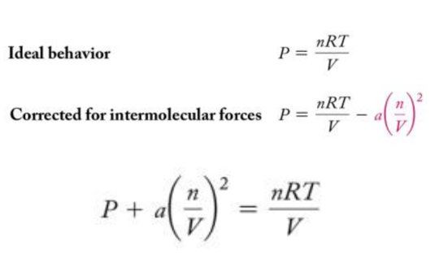

Week 16 - Day 3 (End of Ch 11)
Clicker 1
- Audio 0:00:14.091730
- The following reaction is used to generate
Clicker 2
- Audio 0:05:07.953778
- The rate of effusion of A is four proportional to the square root of the masses so it has to be sixteen times
Practice Problem: Root Mean Square Velocity
- Audio 0:07:23.565131
- Calculate the mean square velocity of oxygen molecules at 25 oC
Gases in Chemical Reactions: Stoichiometry Revisited
- Audio 0:12:05.014774
- In reactions involving reactant or products, the quantity of a gas is often specified in terms of its volume at a given temperature and pressure.
– As noted earlier, stoichiometry involves relationships between amounts in moles.
– For stoichiometric calculations involving gases, we can use the ideal gas law to determine the amounts in moles from the volumes, or to determine the volumes from the amounts in moles.
- n = (PV)/(RT)
- V = (nRT)/P
Reactions Involving Gases
- Audio 0:12:26.511417
- When gases are at STP, use 1 mol = 22.4 L.
- The pressures here could also be partial pressures.
- The general conceptual plan for these kinds of calculations is as follows:
Practice Problem: Gases in Chemical Reactions
- Carbon monoxide reacts with hydrogen to give methanol (CH3OH(g)). What volume (in liters) of H2 gas @ T=82 oC and P=738 Torr do we need to make 35.7 g methanol?
Practice Problem: Using Molar Volume in Gas Stoichiometric Calculations
- Audio 0:13:33.554013
- How many grams of water form when 1.24 L of H2 gas at STP reacts completely with O2?
Properties of (Ideal) Gases
- Audio 0:16:46.617743
- Expand to completely fill their container
- Take the shape of their container
- Low density – Much less dense than solid or liquid state
- Compressible
- Mixtures of gases are always homogeneous fluids
Real Gases
- Real gases often do not behave like ideal gases at high pressure or low temperature.
- Ideal gas laws assume
-
- no attractions between gas molecules; and
-
- that gas molecules do not take up space.
- Based on the kinetic molecular theory
- that gas molecules do not take up space.
-
- At low temperatures and high pressures, these assumptions are not valid.
Real Gas Behavior
- Audio 0:19:58.672978
- Because real molecules take up space, the molar volume of a real gas is larger than predicted by the ideal gas law at high pressures.
The Effect of the Finite Volume of Gas Particles
- Audio 0:21:34.753481
- At low pressures, the molar volume of argon is nearly identical to that of an ideal gas.
- But as the pressure increases, the molar volume of argon becomes greater than that of an ideal gas. – At the higher pressures, the argon atoms themselves occupy a significant portion of the gas volume, making the actual volume greater than that predicted by the ideal gas law.
Modification of the Ideal Gas Equation
- Audio 0:22:23.986334
- In 1873, Johannes van der Waals (1837–1923) modified the ideal gas equation to fit the behavior of real gases at high pressure.
- The molecular volume makes the real volume larger than the ideal gas law would predict.
- Van der Waals modified the ideal gas equation to account for the molecular volume.
– b is a constant van der Waals determined and is different for every gas because the molecules of each gas are of different sizes.

The Effect of Intermolecular Attractions
- Audio 0:23:43.041877
- Van der Waals modified the ideal gas equation to account for the intermolecular attractions.
– a is another constant that van der Waals determined and is different for every gas because the molecules of each gas have different strengths of attraction.
The Effect of Intermolecular Attractions
- At high temperature, the pressure of gases is nearly identical to that of an ideal gas.
- But at lower temperatures, the pressure of gases is less than that of an ideal gas. – At the lower temperatures, the gas atoms spend more time interacting with each other and less time colliding with the walls, making the actual pressure less than that predicted by the ideal gas law.
The Effect of Intermolecular Attractions
- Audio 0:24:58.494772
- 
Van der Waals Equation
- Audio 0:25:16.451107
- Combining the equations to account for molecular volume and intermolecular attractions, the following equation for real gases is derived:
Real Gases
- A plot of PV/RT versus P for 1 mole of a gas shows the difference between real and ideal gases.
PV/RT Plots: Real versus Ideal
- Audio 0:26:19.981110
Real Gases
- Audio 0:27:22.870965
- A plot of PV/RT versus P for 1 mole of a gas shows the difference between real and ideal gases.
- It reveals a curve that shows that the PV/RT ratio for a real gas is generally lower than ideal for “low” pressures—meaning that the most important factor is the intermolecular attractions.
- It reveals a curve that shows that the PV/RT ratio for a real gas is generally higher than ideal for “high” pressures—meaning that the most important factor is the molecular volume.
Vocab
| Term | Definition |
|---|---|
| molecular volume | makes the real volume larger than the ideal gas law would predict to be more realistic |
| b | constant van der Waals determined and is different for every gas because the molecules of each gas are of different sizes |
| a | constant that van der Waals determined and is different for every gas because the molecules of each gas have different strengths of attraction |